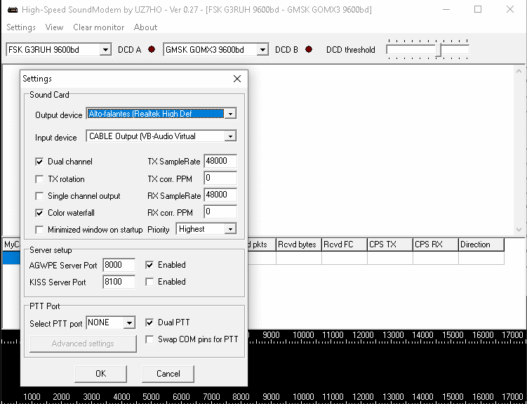
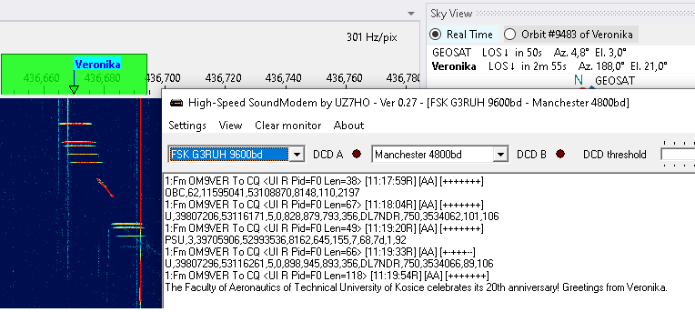
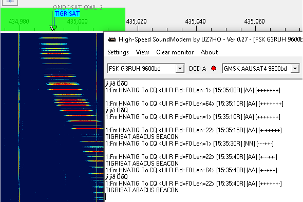
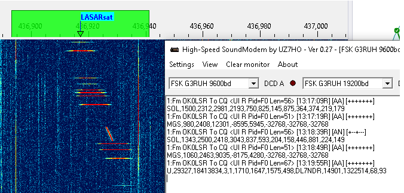

How to Receive FSK & AFSK Telemetry and other info using UZ7HO packet radio TNCs
by Marcus PY2PLL
An external program is needed to decode and display common information usually disseminated using FSK or AFSK. In this tutorial the UZ7HO sound modems will be used. More information about these modems can be found at the UZ7HO Personal page under Packet-Radio - English version.
Installing VAC
A virtual audio cable, VAC, is required to pass the satellite signals demodulated in SkyRoof to the decoding program. Download and install VB-Audio if you do not have it yet, and reboot your system. Be sure to get the latest version (2024) of VB-Audio, the old version may not work correctly.
Setting Up The Sound Modems
Download and extract zipped files content to new folders -- one folder for each executable -- somewhere on your PC storage. For AFSK, e.g. the common modes for APRS, AX-25, 1200bps packet and other similar modes, use this low speed modem; for the higher speeds and formats such as 9600/19200 G3RUH FSK, etc., use this high speed modem Sometimes there is false virus detection or unsafe download alert from some web browsers. As already recommended in the SkyRoof FAQ, scan both links using one of the several online virus scanning services that you can use to check the link.
P.S.: there are a few extra modems that can be tested for other modulation formats such as BPSK, GMSK. etc. in this archieve. But this How-To only covers AFSK and FSK associated to FM_D SkyRoof mode. For the UZ7HO itself, there is a more detailed user guide at Soundmodem User Guide v114
Once downloaded and extracted, create corresponding desktop shortcuts to easy programs launch;
The following examples will cover Veronika or Tigrisat satellites FSK data;
Configure the sound modems audio setup using the already installed VACs. This setup is under Settings => Devices tab. Despite the fact that those modems can be used to TX and RX, the sample picture below assumes that the use is RX only;
Select FSK G3RUH 9600bd in one of the drop down menus and adjust DCD slider up to the point that the "led" blinks a little bit.

Configuring SkyRoof
In SkyRoof:
select the Veronika satellite. If it is not in the current group, add it using the Satellites and Groups dialog;
Select GFSK9K6 AX25 transmitter on the UHF band from the list of transmitters;
Select FM_D downlink mode in the drop-down list on the toolbar;
in the Output Stream section of the Settings window:
select Audio to VAC;
set Gain, dB to 0;
select the VAC in the list of audio devices;
click on the Output Stream label on the status bar to enable the output.
Receiving Data
When the selected satellite raises above the horizon, the UZ7HO FSK Modem will start decoding and produce output like this:

For Tigrisat, the decoded telemetry should be like the picture below:

